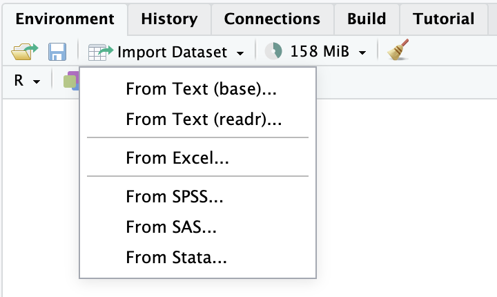

期末考核
期末考核采用提交课程论文/报告的方式进行。
报告内容
《时间序列分析与预测》2024-2025学年第二学期期末考核题目
完成报告需要用到的数据文件：exam.csv, au9999.csv
如何导入数据
右键点击数据文件，选择下载并保存。
在 RStudio 中导入数据：
方法一：熟悉自己的操作系统中文件存放路径表达方法的同学，可以利用 readr 包中提供的
read_csv()函数导入数据（参考第三讲 slides）。方法二：在 RStudio 右上方的面板中选择 Environment > Import Dataset > From Text (readr)… （如下图所示），然后在新弹出的窗口中选择数据文件并导入。

导入后的处理：
- 导入后的数据默认为
tibble，需要将其转换为tsibble。 - 需注意数据中时间变量的保存形式，必要时进行转换。
- 导入后的数据默认为
注意事项
报告内容应是原创，如果需要引用他人观点或结论，请正确标注参考文献。严谨直接使用 AI 生成的内容。
报告需使用深圳大学教务部提供的以论文、报告等形式考核专用答题纸.doc（点击此处下载）。
正文的格式要求
- 字号设为 12 磅
- 正文字体以宋体为宜，章节标题可以用黑体
- 行间距设为 1.5
提交方式
- 将报告打印后提交
- 提交时间：2025年6月27日随堂提交
没有提交期末报告将被视为缺考，成绩将直接记为 F。本门课程为选修课，因此没有补考机会，请同学们注意。